《HTTP 权威指南》读书笔记（第 1-6 章）
旧书清理计划。2012 年出版的书，暂时没有新版，选择性读读。
第 1 章 - HTTP 概述
- Page 6最初设计 MIME（Multipurpose Internet Mail Extension，多用途因特网邮件扩展）是为了解决在不同电子邮件系统之间搬移报文时存在的问题。Web 服务器会为所有 HTTP 对象数据附加一个 MIME 类型，以便与浏览器检测是否可以处理（应该如何处理）该类内容。该类型对应于响应头的 “Content-type” 字段，该字段值就是 MIME 类型。
- Page 7URI = URL（统一资源定位符）+ URN（统一资源名）。
- URL 组成：方案://地址/路径；
- 方案：说明了资源所使用的协议类型（HTTP / HTTPS 等）；
- 地址：服务器的因特网地址；
- 路径：服务器上某个资源的位置。
- URN：作为特定内容的唯一名称使用，与资源所在地无关。通过 URN，可以用同一个名字通过多种网络协议访问资源。
- Page 9HTTP 事务组成：
- 方法：告诉服务器要执行的动作，如 GET、POST、PUT 等；
- 状态码：表明请求的状态，包含一个三位的数字（200）以及一条解释性短语（OK）。其中，解释性短语仅对人类有意义。
- Page 11HTTP 报文是纯文本的，以方便人们对其进行读写。其组成包括（包括请求报文与响应报文）：
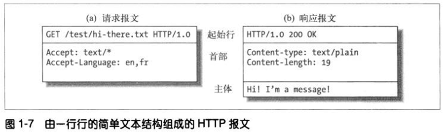
- 起始行：报文的第一行。请求报文中用来说明做什么；响应报文中说明发生了什么；
- 首部字段：位于起始行后面。每行一个字段，每个字段包含一个名值对，以冒号分割。首部以一个空行结束；
- 主体：可选的主体，其中包含所有类型的数据（文本、二进制等）。
- Page 14HTTP 请求中的端口号（包括默认的 80）主要用于建立于特定端口上的 TCP 连接。
- Page 20Web 结构组件：
- 代理；
- 缓存；
- 网关：通常用于将 HTTP 流量转换成其他协议；
- 隧道：是建立之后，就会在两条连接之间对原始数据进行“盲转发”的 HTTP 应用程序。其通常用来在一条或多条 HTTP 连接上转发非 HTTP 数据，转发时不会窥探数据。一种常见用途是通过 HTTP 连接承载加密的 SSL 安全套接字层流量；
- 使用 HTTP CONNECT 方法（主要用于 HTTPS），连接后双方进入“原始 TCP”传输状态，可以直接传输加密数据（比如 TLS）；
- 使用 POST/GET 包裹 TCP 数据（用于通用 TCP 隧道）；
- Agent 代理；代表用户发起 HTTP 请求的客户端程序（如“Web 浏览器”）。
第 2 章 - URL 与资源
- Page 29URL 语法：
<scheme>://<user>:<password>@<host>:<port>/<path>;<params>?<query>#<frag>
- 组件：
- scheme：访问服务器获取资源时要使用哪种协议，不区分大小写；
- user：某些方案访问资源时需要的用户名；
- password：同上，所需的密码；
- host：资源宿主服务器的主机名或点分 IP 地址；
- port：资源宿主服务器正在监听的端口号；
- path：服务器上资源的本地名；
- params：输入参数，由 “=” 连接组成的键值对；
- query：查询参数；
- frag：一小片或一部分资源的名字（仅客户端使用）。
- HTTP 简单认证头部：dXNlcjpwYXNz 是 “username:password” 的 Base64 编码；
GET /protected/resource HTTP/1.1
Host: example.com
Authorization: Basic dXNlcjpwYXNz
- Page 36“相对 URL 到对应绝对 URL” 的转换算法定义在 RFC 2396 中。
- Page 38URL 编码：为了保证 URL 在互联网中各个协议和应用中的可移植性。
- 对部分 URL：对 URL 组成中的某个部分（如 “#”、“/”）进行转译，一般用于转译用户输入（
window.encodeURIComponent）； - 对整个 URL：对整个 URL 进行编码。（
window.encodeURI会将特定字符转换为对应的 UTF-8 编码，比如 query 部分）。
第 3 章 - HTTP 报文
- Page 48HTTP 标准中规定起始行和首部的每一行都以 CRLF（回车符+换行符）结尾。但稳健的应用也应该接受单个换行符作为行终止符。
- Page 50有些 HTTP 版本（如 HTTP/1.1）中要求有效的请求或响应中必须包含特定的首部，即首部不能完全留空。
- Page 51常见请求方法：
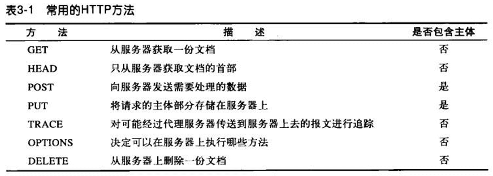
- GET / HEAD 为“安全方法”，对应的 HTTP 请求不会产生动作；
- 使用 HEAD 方法，可以：
- 在不获取资源的情况下了解资源的情况；
- 通过查看响应中的状态码，查看某个对象是否存在；
- 通过查看首部，测试资源是否被修改。
- PUT 方法的语义：让服务器用请求的主体创建一个由所请求 URL 命名的新文档，或者覆盖已有的文档（一般是幂等的）；
- POST 侧重于向服务器提交数据的目的，一般用于发生非幂等的改变；
- TRACE 方法会让服务器原样返回客户端发送的请求内容，主要用于诊断，即用于验证请求是否如愿穿过了请求/响应链；
- HTTP/1.1 中新增了 PATCH 方法（RFC 5789）；
- 通常，GET、HEAD、PUT、DELETE、TRACE 和 OPTIONS 方法是幂等的。
- GET 等方法也可以携带主体（body）部分，只是在 RFC 中并没有明确要求需要携带；
- OPTIONS 请求：主要用于 CORS 跨域资源共享，请求给定的 URL 或服务器的允许通信选项。本质是为浏览器提供的一套安全跨域资源访问策略；
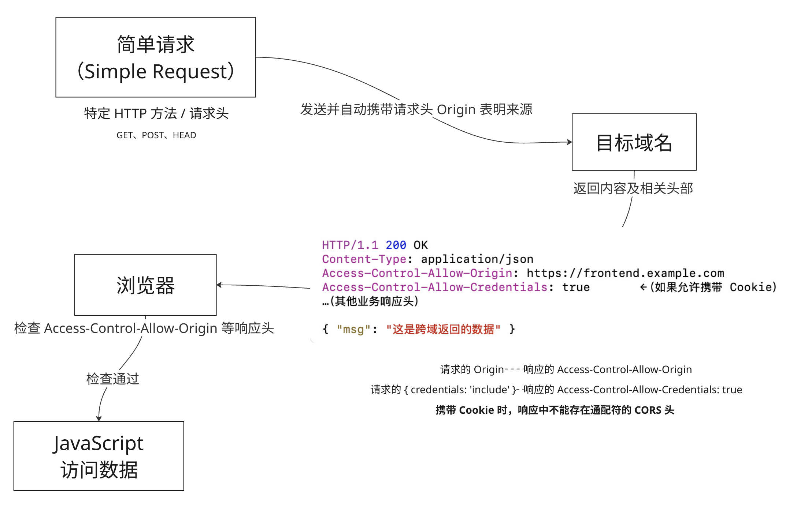简单请求
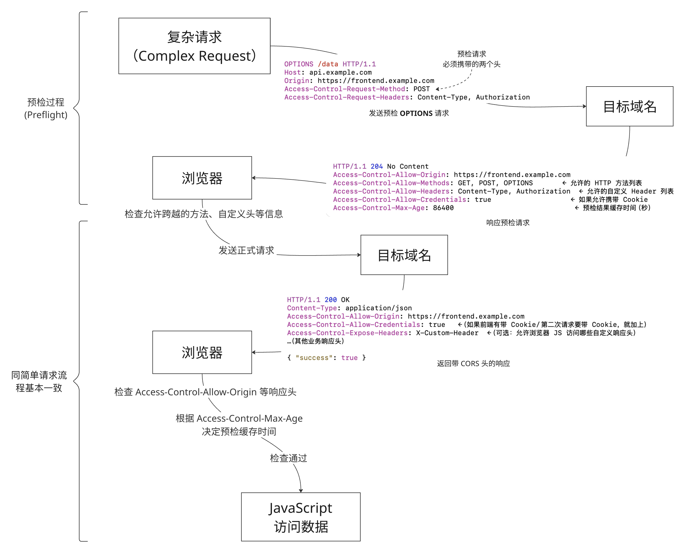复杂请求
- Page 52常见状态码：
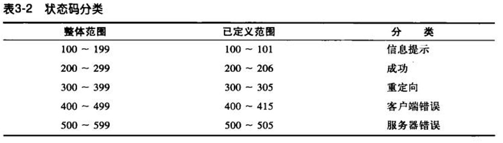
- 100：Continue。说明收到了请求的初始部分，请求客户端继续；
- 客户端：如果客户端在向服务器发送一个实体，且愿意在发送前等待 100 Continue 响应，那么，客户端就要发送一个携带值为 “100 Continue” 的 Expect 首部；
- 服务器：收到对应请求后，用 “100 Continue” 或一条错误码作为响应；
- 代理：根据下一跳服务器的 HTTP 兼容情况，选择性返回 417 Expectation Failed 或者继续向下转发。
- 101：Switching Protocols。服务器正在根据客户端的指定，将协议切换成 Update 首部所列协议（WebSocket 的链接过程会使用）；
- 201：Created。服务器对象创建成功（PUT）；
- 202：Accepted。请求已被接受，但服务器还未对其执行任何动作。响应实体中应该包含对请求状态的描述，及请求完成时间的估计；
- 203：Non-Authoritative Information。实体首部包含的信息不是来自于源段服务器，而是资源的一份副本；
- 204：No Content。响应报文无实体。一般为非显式更新资源的结果；
- 205：Reset Content。告知浏览器清除当前页面中的所有 HTML 表单元素；
- 206：Partial Content。成功执行了一个部分或 Range 请求（需要同时返回 Content-Range、Date 以及 Etag 或 Content-Location 首部）；
- 300：Multiple Choices。客户端请求一个实际指向多个资源的 URL 时会返回该状态码，比如服务器上有某个 HTML 文档的多个语言版本；
- 301：Moved Permanently。请求的 URL 已被移除时使用。响应的 Location 首部中包含资源的当前可用 URL，任何未来对这个资源的引用都应该使用新的 URL；
- 302：Found。表示目标资源临时移动到了另一个 URL 上。由于重定向是临时发生的，所以客户端在之后的请求中还应该使用原本的 URL（由于历史原因，POST 请求可能被用户代理重定向为 GET）；
- 303：See Other。告知客户端应用另一个 URL 来获取资源，主要用于允许 POST 请求的响应将客户端重定向到某个资源上（比如将提交成功后的表单导向一个“上传成功”页面）；
- 304：Not Modified。表示资源未被修改；
- 305：Use Proxy。说明必须通过一个代理来访问资源，代理的位置由 Location 首部给出；
- 306：（未使用）；
- 307：Temporary Redirect。与 302 类似，但不允许将原本为 POST 的请求重定向到 GET 请求上；
- 308：Permanent Redirect。与 301 类似，但不允许将原本为 POST 的请求重定向到 GET 请求上；
- 400：Bad Request。用于告知客户端它发送了一个错误的请求；
- 401：Unauthorized。与适当的首部一同返回，在这些首部中请求客户端在获取对资源的访问之前，对自己进行认证；
- 402：Payment Required。（保留）；
- 403：Forbidden。说明请求被服务器拒绝了；
- 405：Method Not Allowed。说明发起的请求中带有所请求 URL 不支持的方法。响应中应携带 Allow 首部，告知客户端可用的方法有哪些；
- 406：Not Acceptable。说明服务器没有与客户端可接受的 URL 相匹配的资源；
- 407：Proxy Authentication Required。与 401 类似，但用于要求对资源进行认证的代理服务器；
- 408：Request Timeout。若客户端完成请求所花时间太长，服务器可返回次状态码；
- 409：Conflict。说明请求可能在资源上引发一些冲突。服务器担心请求会引发冲突时，可以发送此状态码；
- 410：Gone。与 404 类似，只是服务器曾经拥有过此资源。主要用于 Web 站点的维护；
- 411：Length Required。服务器要求在请求中包含 Content-Length 首部；
- 412：Precondition Failed。表明客户端发起了条件请求（带有 Expect 首部），且其中一个条件失败了；
- 413：Request Entity Too Large。表明客户端发送的实体主体部分过大；
- 414：Request URI Too Long。表明客户端发送请求的 URL 过长；
- 415：Unsupported Media Type。表明服务器无法理解或支持客户端所发送的实体类型；
- 416：Requested Range Not Satisfiable。表明请求报文指定的资源范围无法被服务器满足；
- 417：Expectation Failed。表明请求的期望（带有 Expect 首部）无法被满足；
- 501：Not Implemented。表明客户端发起的请求超出了服务器的能力范围；
- 502：Bad Gateway。作为代理或网关使用的服务器从请求响应链的下一条链路上收到了一条伪相应；
- 503：Service Unavailable。说明服务器现在无法为请求提供服务；
- 504：Gateway Timeout。与 408 类似，只是这里的响应来自一个网关或代理，它们在等待另一服务器对其请求进行响应时超时了；
- 505：HTTP Version Not Supported。服务器收到的请求使用了它无法或不愿支持的协议版本。
- Page 54首部：
- 常见首部：
- （通用首部）Connection：允许客户端和服务器指定与请求/响应连接有关的选项；
- （通用首部）Date：说明报文的创建时间；
- （通用首部）MIME-Version：给出了发送端使用的 MIME 版本；
- （通用首部）Trailer：用于“分块传输编码”，可列出位于报文 trailer 部分的首部集合；
- （通用首部）Transfer-Encoding：告知接收端为保证报文的可靠传输，对报文采用的编码方式；
- （通用首部）Update：给出了发送端可能想要“升级”使用的新版本或协议；
- （通用首部）Via：显示了报文经过的中间节点（代理、网关）；
- （通用首部）Cache-Control：用于随报文传送缓存指示；
- （通用首部）Pragma：用于随报文传送指示；
- （请求首部）Client-IP：提供了客户端机器的 IP；
- （请求首部）From：提供了客户端用户的邮件地址；
- （请求首部）Host：给出了接受请求的服务器的主机号和端口号；
- （请求首部）Referer：提供了包含当前 URI 的文档 URL；
- （请求首部）UA-*：提供了客户端相关信息；
- （请求首部）User-Agent：将发起请求的应用名称告知服务器；
- （请求首部）Accept：告诉服务器能够发送哪些媒体类型；
- （请求首部）Accept-Charset：告诉服务器能够发送哪些字符集；
- （请求首部）Accept-Encoding：告诉服务器能够发送哪些编码方式；
- （请求首部）Accept-Language：告诉服务器能够发送哪些语言；
- （请求首部）TE：告诉服务器可以使用哪些扩展传输编码；
- （请求首部）Expect：允许客户端列出某请求所要求的服务器行为；
- （请求首部）If-Match：如果实体标记（某版本资源的标识符）与文档当前的实体标记相匹配，就获取该文档；
- （请求首部）If-None-Match：（与上相反）；
- （请求首部）If-Modified-Since：除非在某个指定日期之后资源被修改过，否则就限制该请求；
- （请求首部）If-Unmodified-Since：（与上相反）；
- （请求首部）If-Range：允许对文档的某个范围进行条件请求；
- （请求首部）Range：如果服务器支持范围请求，就请求资源的指定范围；
- （请求首部）Authorization：包含了客户端提供给服务器，以便其对自身进行认证的数据；
- （请求首部）Cookie：向服务器传送令牌；
- （请求首部）Cookie2：用来说明请求端支持的 cookie 版本；
- （请求首部）Max-Forward：在通往源端服务器的路径上，将请求转发给其他代理或网关的最大次数（与 TRACE 方法一起使用）；
- （请求首部）Proxy-Authorization：与 Authorization 首部相同，但用于代理；
- （请求首部）Proxy-Connection：与 Connection 首部相同，但用于代理；
- （响应首部）Age：从最初创建开始，响应持续的时间；
- （响应首部）Public：服务器为其资源支持的请求方法列表；
- （响应首部）Retry-After：如果资源不可用，在此日期或时间重试；
- （响应首部）Server：服务器应用程序的名称和版本；
- （响应首部）Title：对 HTML 来说，就是 HTML 文档的源端给出的标题；
- （响应首部）Warning：比原因短语中更详细一些的警告报文；
- （响应首部）Accept-Ranges：对此资源来说，服务器可接受的范围类型；
- （响应首部）Vary：服务器查看的其他首部列表，可能会使响应发生变化；
- （响应首部）Proxy-Authenticate：来自代理对客户端的质询列表；
- （响应首部）Set-Cookie：可以在客户端设置一个令牌；
- （响应首部）Set-Cookie2：与上类型，由 RFC 2965 定义；
- （响应首部）WWW-Authenticate：来自服务器对客户端的质询列表；
- （实体首部）Allow：列出了可对此实体执行的请求方法；
- （实体首部）Location：告知客户端实体实际上位于何处，用于将接收端定向到资源的可用位置上去；
- （实体首部）Content-*：与实体内容相关的信息（编码方式、语言、长度、MD5、范围、类型等）；
- （实体首部）ETag：与此实体相关的实体标记；
- （实体首部）Expires：实体不再有效，要从源端再次获取此实体的日期和时间；
- （实体首部）Last-Modified：该实体最后一次被修改的日期和时间。
- 首部延续行：以空格或制表符（tab）延续首部。
HTTP/1.0 200 OK
Content-Type: image/gif
Content-Length: 8572
Server: Test Server
Version 1.0
第 4 章 - 连接管理
- Page 81TCP 连接：
- TCP 会按序、无差错地承载 HTTP 数据；
- TCP 流是分段的、由 IP 分组（IP 数据报）传送，即 “HTTP over TCP over IP”。对应的 HTTPS 就是在 HTTP 与 TCP 之间插入了一个密码加密层（即 TLS 或 SSL）。
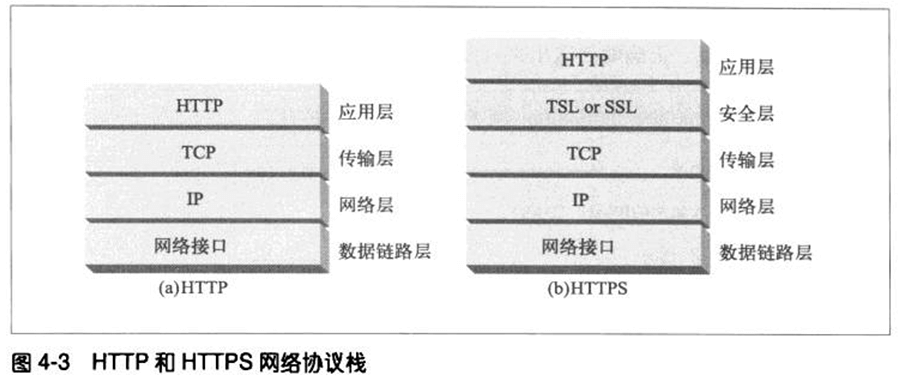
- HTTP 报文流 -> TCP 分段 -> 封装 IP 分组 -> 传输；
- 一个 TCP 连接由“源 IP 地址”、“源端口号”、“目的 IP 地址”、“目的端口号”四个部分唯一确定；
- IP 分组包括：
- （20 字节）一个 IP 分组首部（包含源和目的 IP、长度和其他标记）；
- （20 字节）一个 TCP 段首部（包含 TCP 端口号、TCP 控制标记以及用于数据排序和完整性校验的一些数字值）；
- 一个 TCP 数据块（0 或多个字节）。
- IP 分组报文结构：
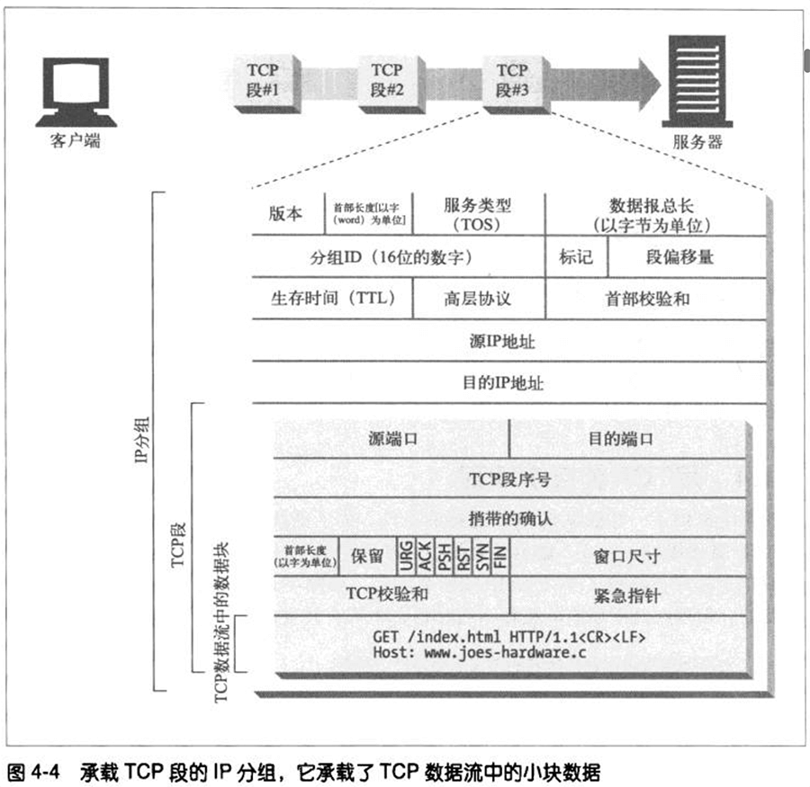
- “TCP 段序列” 和 “TCP 检验和” 字段用于保证数据传输的完整性；
- “捎带的确认”字段中存放了发送回发送者的确认分组（由接受者发出，以确认收到某个分段），只不过由于确认分组报文本身很小，因此该分组可以由其他相同方向（向发送者）的输出数据分组“帮忙捎带”。
- TCP 性能：
- HTTP 事务的时延：
- 域名到 IP 的 DNS 查询时延（可通过本地缓存解决）；
- TCP 连接建立时延；
- HTTP 请求发送、处理和接收时延。
- TCP 连接三次握手过程：
- （SYN 位）客户端向服务器发送一个小的 TCP 分组（40~60 字节）。分组中设置了一个特殊的 SYN 标记，说明这是一个连接请求；
- （SYN 位 + ACK 位）若服务器接受了连接，会计算一些连接参数，并向客户端返回一个 TCP 分组，该分组中的 SYN 和 ACK 标记被置位，说明连接请求已被接受；
- （ACK 位）最后，客户端向服务器回送一条确认信息，通知连接已成功建立。现代 TCP 栈都允许客户端在这个确认分组中发送数据。
- TCP 的“延迟确认”算法：为了增加“确认报文”找到同向传输数据分组的可能性。该算法会在一个特定的时间窗口（通常为 100~200 ms）内将输出确认存放在缓冲区中，以寻找能够捎带它的输出数据分组。若在该时间段内没有符合要求的输出数据分组，就将确认信息放在单独的分组中传送。在某些情况下，该算法会导致较大的时延。
- TCP 慢启动：TCP 连接会随着时间进行自我“调谐”，起初会限制连接的最大速度，如果数据成功传输，会随着时间的推移提高传输速度（打开拥塞窗口）。这种机制称为 “TCP 慢启动”，用于防止因特网的突然过载和拥塞。在这种情况下，每个新建立 TCP 连接的传输速度会比已经交换过一定量数据的连接慢一些。因此，可以持久连接的 HTTP 连接可以在一定程度上解决这个问题；
- Nagle 算法与 TCP_NODELAY：Nagle 算法试图在发送一个分组之前，将大量 TCP 数据绑定在一起，以提高网络效率。该算法鼓励发送“全尺寸”的段，而小的 HTTP 报文可能无法填满一个分组，会因为等待额外数据而产生时延。同时，对于“延迟确认”机制，Nagle 算法会阻止数据的发送，直达有确认分组抵达为止（Nagle 机制在未接收到第一个报文的确认分组前，不会发送已读取到的报文），但确认分组自身还会被延迟确认算法延迟 100~200 ms。通过设置 TCP_NODELAY，可以禁用 Nagle 算法；
- TIME_WAIT 累积与端口耗尽：当某个 TCP 端点关闭 TCP 连接时，会在内存中维护一个小的控制块，以记录最近关闭连接的 IP 地址和端口号，以确保在这段时间内不会创建具有相同地址和端口号的新连接（防止在短时间内创建、关闭并重新创建两个具有相同 IP 和端口号的连接。比如复制了来自之前连接的分组）。当 TCP 连接的源 IP、目的 IP 以及目的端口号都固定时，有限的源端口号可能成为阻碍基准测试的一个因素（连接率收到限制）。
- Page 92HTTP 请求的 Connection 首部：
- 指定了两个相邻 HTTP 应用之间的共享连接（比如发送端与第一个代理之间、两个中间代理之间等）的一组选项。这些选项仅应用于该连接，不会被传播到下一跳的链接中去；
- Connection 首部可用标签类型：
- HTTP 首部字段名，该首部字段包含与此连接相关的信息；
- 任意标签值，用于描述此连接的非标准选项；
- 值 close，表明操作完成后需关闭这条持久连接。
- “逐跳首部名”（仅应用于这一跳的首部）可以放入 Connection 首部中，以确保在发送到下一跳前删除该首部。
- Page 93四种提高 HTTP 连接性能的技术：
- 并行连接：通过多条 TCP 连接发起并发的 HTTP 请求；
- 持久连接：重用 TCP 连接，以消除连接及关闭时延（可以省去握手和慢启动过程）。*实现要求所有报文的实体长度都要和相应的 Content-Length 一致，以使得可以区分报文的起始和结束位置：
- HTTP/1.0+ Keep-Alive：可以通过包含 Connection: Keep-Alive 首部请求将一条连接保持在打开状态，若服务器支持且同意，则会在响应中包含同样的 Connection 首部，而 Keep-Alive 首部中将指定相关行为的选项。该方式在通信链路中间存在“哑代理”时会存在问题；
- HTTP/1.1 持久连接：除非发送的请求中指明 Connection: close，否则默认情况下持久连接是激活的。
- 管道化连接（已逐渐被淘汰，被 HTTP/2 的多路复用取代）：通过共享的 TCP 连接发起并发的 HTTP 请求。几个限制：
- 必须按照与请求相同的顺序回送 HTTP 响应；
- HTTP 客户端不应该用管道化的方式发送会产生副作用的请求（比如 POST），因为在服务器出错时，这些请求无法被安全重试（不幂等）。
- 复用的连接：交替传送请求和响应报文。
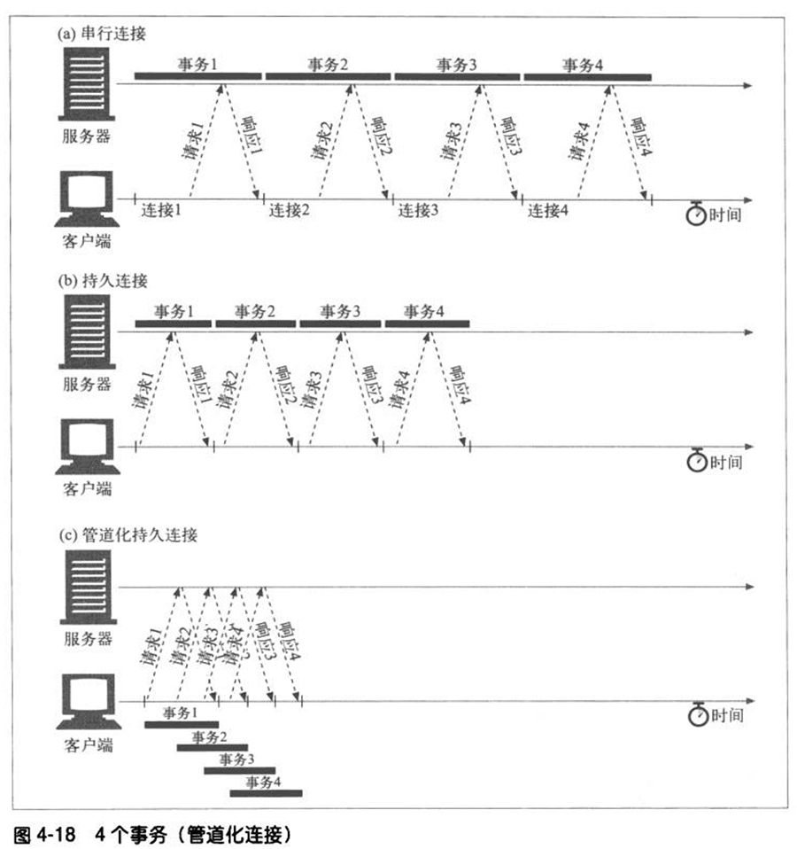
- Page 108正常关闭连接：
- TCP 连接是双向的，因此需要四次挥手；
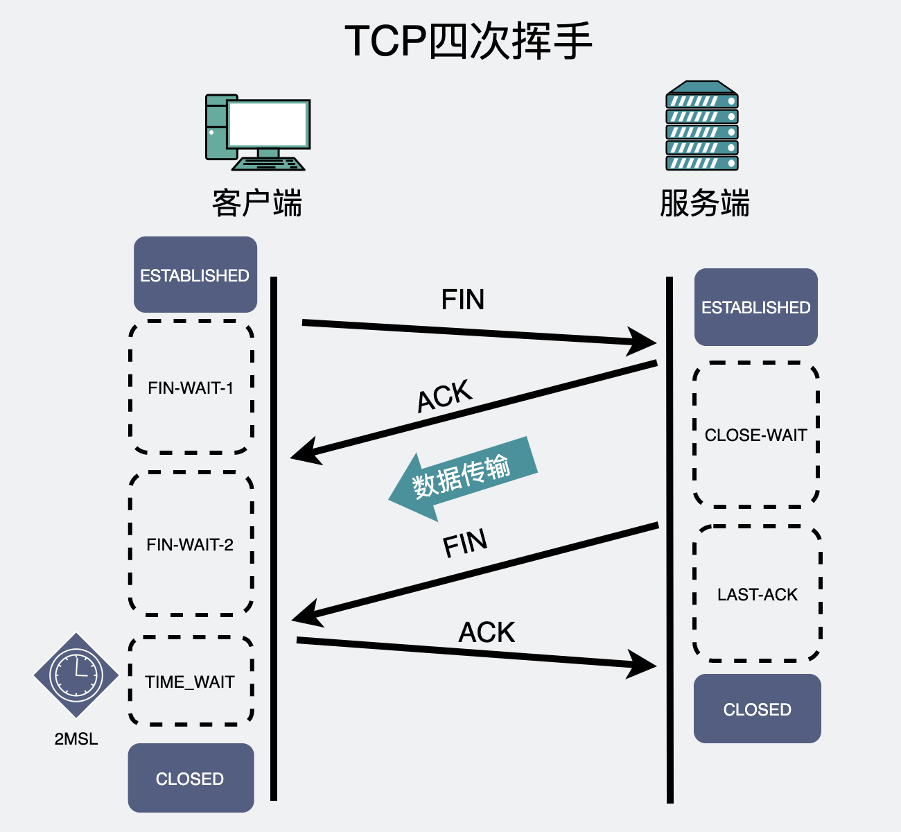TCP 断开的四次挥手
- 关闭连接的输出信道总是安全的，而关闭连接的输入信道是危险的。如果另一端向已关闭的输入信道发送数据，操作系统会向另一端的机器回送一条 TCP “连接被对端重置”的报文。
第 5 章 - Web 服务器
- Page 125不同的 Web 服务器结构：
- 单线程 Web 服务器：一次处理一个请求，直到其完成为止。一个事务处理结束之后，才去处理下一条连接；
- 多进程及多线程 Web 服务器：基于“线程池”，同时对多个请求进行处理；
- I/O 复用 Web 服务器：用于支持大量的连接。复用结构中，同时监视所有连接上（多个 fd）的活动。当连接发生变化时，就对其进行处理；处理结束后，将连接返回到开放连接列表中，等待下一次状态变化；
- 复用的多线程 Web 服务器：结合多线程与复用功能。
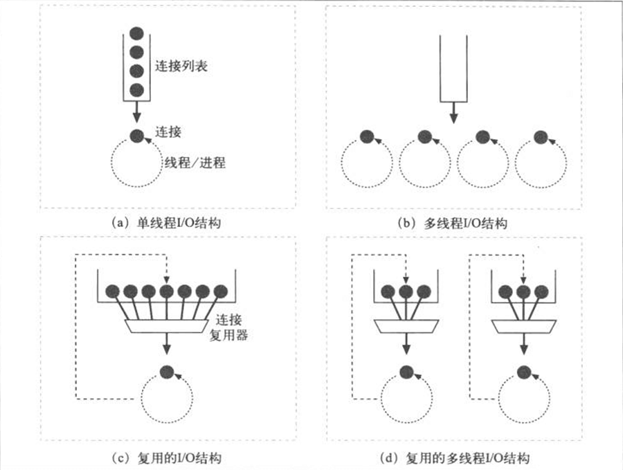
- Page 132响应主体 MIME 分类方式：
- 文件扩展名；
- 魔法分类（如魔数）；
- 显式分类；
- 协商分类。
第 6 章 - 代理
- Page 137代理与网关的区别：严格来讲，代理连接的是两个或多个使用相同协议的应用程序（中继）；而网关连接的则是两个或多个使用不同协议的端点（协议转换器）。但实际上，两者之间的区别很模糊。
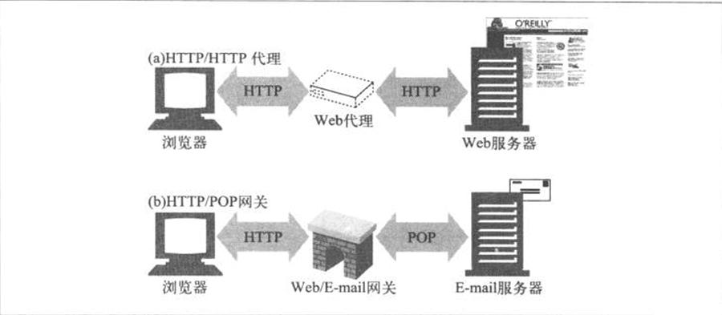
- 正向代理（Forward Proxy）是“站在客户端这边”帮你访问服务器：VPN、爬虫等等；
- 反向代理（Reverse Proxy）是“站在服务器这边”帮你接收客户端请求：LBS、缓存、统一路由入口等等。
- Page 138代理的应用场景：
- 内容过滤器；
- 文档访问控制；
- 安全防火墙；
- Web 缓存；
- 反向代理（这里指“假扮 Web 服务器”）；
- 内容路由器：根据流量状况以及内容类型将请求导向特定的 Web 服务器；
- 转码器；
- 匿名者：主动从 HTTP 报文中删除身份特性，以提供高度的私密性。
- Page 147代理如何获取流量：
- 修改客户端代理；
- 修改网络（交换设备或路由器，即“拦截”）；
- 修改 DNS 的命名空间（如基于 DNS 的 LB）；
- 修改 Web 服务器（通过 Location 响应首部，将请求重定向到代理）。
- Page 158Via 首部字段列出了与报文途径的每个中间节点（代理或网关）有关的信息。报文每经过一个节点，都必须将这个中间节点添加到 Via 列表的末尾。Server 首部仅用于原始服务器。
- Page 162TRACE 方法可用于跟踪报文在各个代理内的变化。当 TRACE 请求到达目的服务器时，整条请求报文都会被封装在一条 HTTP 响应的主体中回送给发送端。可以使用 Max-Forwards 首部来限制 TRACE 和 OPTIONS 请求所经过的代理跳数。Max-Forwards 每经过一个代理时会被减一，当其值为 0 时，则必须将 TRACE 报文回送给客户端。
- Page 166OPTIONS 请求可用于发现 Web 服务器上某个特定资源所支持的功能。请求成功后会返回一个包含各种首部字段的 200 响应，这些字段描述了服务器支持的，或资源可用的各种可选特性。HTTP/1.1 在响应中唯一指定的首部字段为 Allow 首部，其包含了服务器支持的方法列表。
评论 | Comments